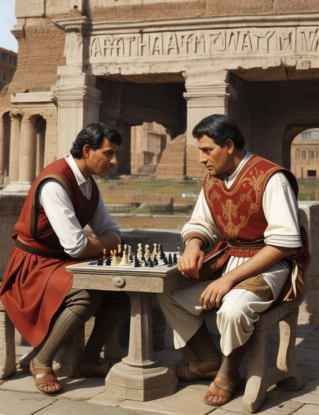
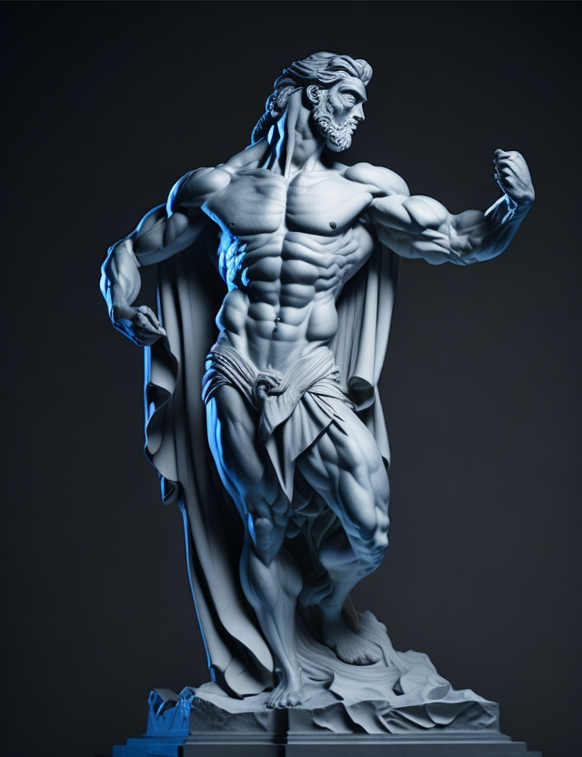
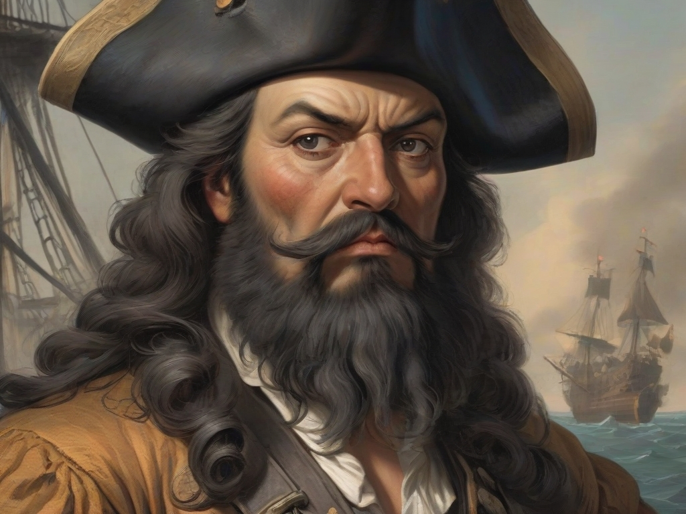

The resolution is 640 x 832px. It was created on 10/12/23 at 5:46 PM. The guidance scale used is 7. No step count was provided. The sampler used is Leonardo. The seed number is 448397312. The preset applied is Leonardo Style. There is no prompt magic. The init strength is not applicable as there is no init image. There is no high contrast.
Prompt - ancient rome two men playing chess

The resolution is 640 x 832px. It was created on 07/08/23 at 10:06 PM. The guidance scale used was 7. The step count is not applicable as it is marked with a "-". The sampler used was Leonardo. The seed is 61673728. The preset applied is Leonardo Style. There is prompt magic with V2 and a prompt magic strength of 0.4. The initial strength is not applicable as there is no init image. The high contrast is turned on.
Prompt - Create an evocative image of a majestic Ancient Greek statue, capturing the essence of timeless beauty and strength. The statue depicts a god from Greek mythology, standing gracefully in a dynamic pose and flexing his muscles. The intricate details of the statue's drapery, facial expression, and muscular form should be highlighted, conveying both the divinity and humanity of the subject. Surround the statue with an ambiance that transports viewers to the grandeur of an ancient temple, where soft sunlight bathes the marble figure in a warm, ethereal glow.

The resolution is 1024 x 768px. It was created on 09/12/23 at 12:04 PM. The sampler used is Leonardo. The seed number is 6374912. No preset was applied. There is no prompt magic. The init strength is not applicable as there is no init image. There is no high contrast.
Prompt - A notorious pirate during the Golden Age of Piracy in the early 18th century, his imposing appearance, with a black beard and slow-burning fuses in it.